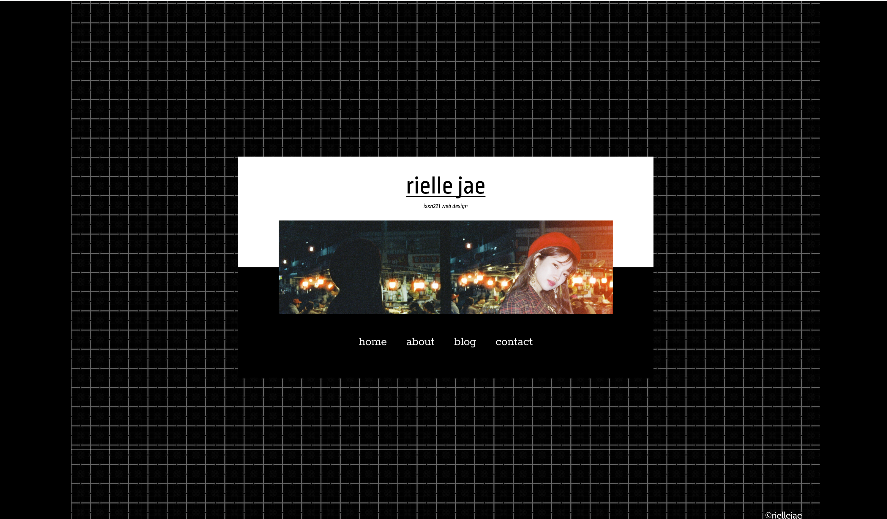

blog update #10
group project - meeting, week 6, tutorial 12
This tutorial, we've created a figma and google document to share our part of our work for the group project.
blog update #9
group project - meeting, week 6, tutorial 11
In this tutorial, we met up with our allocated group. We talked through Discord as it was easier for everyone also the zoom rooms weren't working. We all talked about the group project and ideas and automatically chose Lucy's idea as it was a good one. To make a portfolio for each of us, a design company. It didn't take long. for us to have a draft plan on what we wanted to do. We also allocated roles we all felt confident in.
blog update #8
blog project - code draft, week 5, tutoria 00
I've finally decided to code my website. It was a bit hard at first, then I realise I was doing it wrong. I did not do the media query, viewport, and so much more. But I did realise my mistake and made sure to add it in. But the only thing I did not do was make it responsive. In all honesty, I am wanting to redesign my blog. Click on the link for the files. -> https://github.com/byzelaa/blogwebsite
blog update #7
javascript baby steps, week 5, tutoria 9
This was one of my favourite exercises out of all. I sometimes love doing javascript exercise. When you press the first button, the bubble tea will finish but if it's the second button, it will still be full. I have chosen to do a bubble tea related button as the time I was doing this, I was drinking bubble tea. I did not know why but at first it was confusing but I guess because I just woke up but after looking at the resources in blackboard is started to make sense. Click on the link for the files. -> https://github.com/byzelaa/ixxn221-exercises/tree/javascript-babysteps
blog update #6
grid tutorial, week 4, tutoria 8
I have done one page of the grid tutorial and it is not easy at first. I was a bit confused on what I needed to do as the code was already written. But thankfully I manage to understand so I can create a grid. I started with a div class gridcontainer and went in css to fix up the columns to make it look like the wireframe included in the zip file. I think this was a great learning experience. Click on the link for the files. -> https://github.com/byzelaa/ixxn221-exercises/tree/grid-tutorialm
blog update #5
blog project - second draft, week 4, tutoria 00
I have made a second draft with my blog project. I now changed everything to white. It was a bit better as most text were readable. Also, it doesn't hurt your eyes a lot unless you have high brightness on. I kept my same kind of wireframes but for some weird feeling I am a bit unhappy with it. I think this is good for me so I will be coding it. Click on the link for the prototype. -> https://www.figma.com/proto/lV8m4yxV9LEf9V4me4WZMv/New-Blog?node-id=1%3A2&scaling=min-zoom
blog update #4
flexbox exercise - extra, week 3, tutoria 5
After doing the flexbox exercise. I decided to do the extra in the blackboard. This was more fun to learn about flexbox. I did the levels a couple of times cause it felt like a game and I like games. I've bookmarked this website for future references. I have also added a link below. Click on the link for flexboxfroggy. -> https://flexboxfroggy.com/
blog update #3
flexbox exercise, week 3, tutoria 5
For tutorial 5, the exercise was the flexbox. It was my first time learning about flexbox. It was a bit confusing at first but after looking at the resources in blackboard and other sites, I have finally understood flexbox. But personally, I do not like it. I managed to do the computer version but did not know how to work the mobile/ tablet version yet. This was also the first time I started using git command which did not end well as it did not let me commit. Therefore I had to switch to github desktop. Even though it wasn't preffered, I had to use it cause my computer did not let me use git command. But I had to re-submit in github as I don't know where I made the branch. Click on the link for the files. -> https://github.com/byzelaa/ixxn221-exercises/tree/flexbox
blog update #2
blog project - first draft, week 2, tutorial 3

When the blog project was introduced, I started on drafting a Figma prototype. The theme I wanted to do was dark-mode minimalist blog. I used example images for the prototype as I didn't know what to put on there official. There were some troubles with the prototype, in the design section. The blog post did not really look good and wasn't really readable. The whole blog had a lot of black. I asked my classmates and friends for feedback and everyone really said it was too black and not readable. Below, I have added the link to my first draft prototype. Click on the link for the prototype -> https://www.figma.com/proto/XhuizHGZvzwJc8XyRWyrH8/RielleBlog?node-id=2%3A3&scaling=min-zoom
blog update #1
exercise 1 - HTML and CSS, week 1, tutorial l

For exercise one, I have copied Yukika's old front website. What I did was to copy it from scratch with the help of W3S and if I was stuck, I would look at the inspect button on chrome of the website to have a quick look. The photo above is my end result for this exercise. I have chosen Yukika's old website as it is easy and simple. No java script and basic HTML and CSS. Click on the link for the files -> https://github.com/byzelaa/ixxn221-exercises/tree/exercise-one